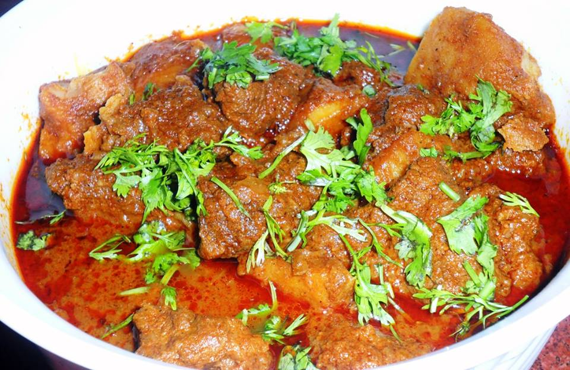

Ingredients:
1)750 gms Mutton
2)3/4 cup Fried Onions (store bought / home made)
3)1 1/2 tblsp Coriander Powder
4)1 1/2 tsp Red Chilly Powder (For heat)
5)1 1/2 tblsp Kashmiri Red Chilly Powder (For Color)
6)2 tblsp Garlic Paste
7)2 tblsp Ginger Paste
8)8 tblsp Curd
9)3 tblsp Ghee / Oil
10)2 Cups water
11)Few Kewra Essence Drop
12)Salt To Taste
Whole Spices:
1)2 Bay Leaf
2)2 Black Cardamom
3)5 - 6 Green Cardamom
4)7 Cloves
5)2" Cinnamom Stick
For Garnish
1)1 tblsp Ginger Juliennes
How to make Mutton Korma :
1)If you do not have store bought fried Onions then follow these instructions to make them at home.
2)For Crisp Fried Onions - Finely slice the onions and heat the oil. Just before frying the onions sprinkle 1 tsp of cornflour on the sliced onions and very quickly put them in oil for frying on medium flame. Keep turning them and make sure they do not get dark brown.
3)Once they reach the golden brown color, take them out with a slotted spoon and spread them on a plate to dry and get crisp. Do not take them out a paper towel or they will get soggy. Also keep the color of the fried onions 1 shade lighter as they get dark once crisp.
4)In a big bowl mix together beaten curd, coriander powder, red chilly powder, kashmiri red chilly powder, red chilly powder, garlic - ginger paste and 1/2 cup fried onions.
5)Now add the mutton pieces and mix well so that all the mutton pieces are coated well with the marinade. Cover the bowl and let it marinate in the fridge for couple of hours. If short of time then even 1/2 - 1 hour is good enough.
6)Befor starting to cook, bring the marinated mutton to room temperature and add the salt.
7)Now take a heavy bottom kadai / pan and heat the ghee / oil in it. Add all the whole spices - Bay Leaf, Black Cardamom, Green Cardamom, Cloves and Cinnamom Stick.
8)When the whole spices begin to sputter add the marinated mutton and let the mutton fry on high flame till all the moisture is evaporated and all the pieces are evenly browned. This usually takes 10 minutes. Getting the perfect brown color is very important. So fry accordingly.
9)Lower the flame and add the water. Cover the pan / kadai and let the mutton cook for 40 - 45 minutes
10)Now add the remaining fried onions and kewra drops and mix well.
11)Cover the pan and further cook for 20 - 30 minutes or till the mutton is soft and fork tender.
12)In between check for the consistency of the gravy and add water accordingly.
13)Garnish with ginger juliennes.
Serve hot with Naan / Tandoori Roti / Roomali Roti.